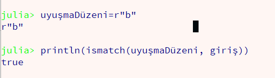
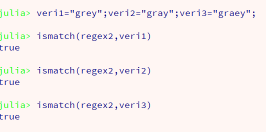
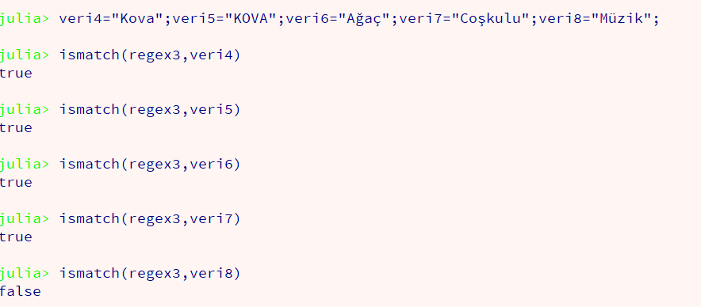
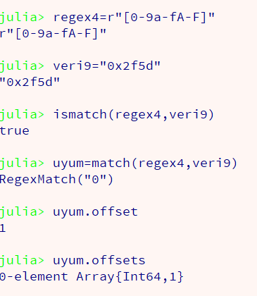
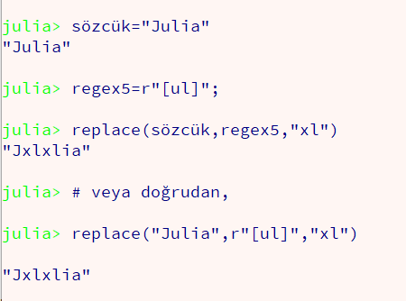
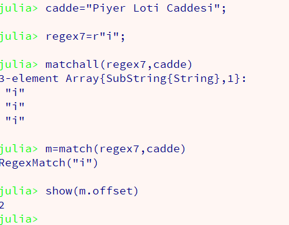
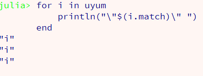
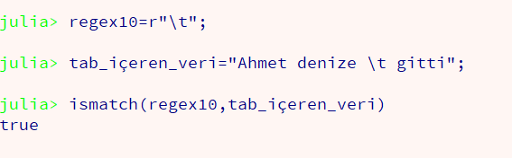
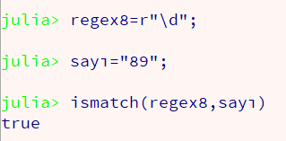
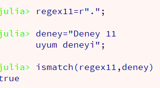

Julia Programlama Dili
Bölüm 2
Veri Tipleri Sistematiği
Sayfa 3
2.2 - Sayısal Olmayan Veri Tipleri
2.2.1 - Soyut Sayısal Olmayan Veri Tipleri
2.2.2 - Somut Sayısal Olmayan Veri Tipleri
2.2.2.1 - String Veri Tipi
Julia programlama dilinde string verileri daima çift tırnak ile "Ankara" şeklinde, veya üçlü tırnak ile""" Anadoluhisarı""" şeklinde yazılır.
String veri tipi, Julia tip sisteminde, sayısal olmayan veriler kategorisinde, Any>String şeklinde, Any tepe üst sınıfının hemen bir altında olarak sınıflandırılmıştır. String veri tipi, sözel veri tipi anlamındadır ve sayısal veri tipi ile aynı alt düzeydedir.
Julia programlama dilinde, sözel veriler, sadece "" arasında yazılır. String tipi veriler, kesinlikle tek tırnak içinde yazılmaz. Tek tırnak arasında yazım sadece Char(Karakter) tipi veriler için uygulanabilir. Sözel veri içinde tek tırnak kullanıldığı, " Ankara 'Keçiören' " şeklinde tanımlar geçerlidir.
Sözel veriler, typeof(veri ) şeklinde sorgulandığında, Julia 0.6 sürümü için,
julia>typeof("Filyos" )< --- Enter
julia>String
julia>typeof("Doğa" )< --- Enter
julia>String
yanıtı alınır. Yeni Julia sürümünde String veri tipi uygulanabilir bir veri tip haline getirilmiş ve hangi karakter ile tanımlanmış olursa olsun tüm sözel tanımlar, tek bir String veri tipinde toplanmıştır.
Sözel veriler, sadece karakter elemanlarından oluşmuş bir dizi olarak düşünülebilir. Sayısal diziler ardarda yerleşik sayılardan oluşurken, sözel diziler de ardarda, ardarda sıralanmış karakterlerden oluşmaktadır. Dizileri biraz sonra göreceğiz, fakat sözel verilerle bazı dizi yöntemlerini inceleme olanağı bulacağız.
Atanmış bir değişkendeki veriler geçiş sağlamaya uygun olursa bu değişkene atanmış olan nesne ancak bir koleksiyon olabilir. Sadece koleksiyon nesneleri, iterabl (traversabl = geçişe uygun) olabilir. Tek değerlerin geçişe uygunluğu yoktur (non-iterabl). Çünkü, atanmış değer tek olduğundan bir sonraki veya bir önceki sırada olan bir değer yoktur. Eğer tek değer üzerinden iterasyon yapılmaya kalışılırsa, ya hata oluşur, ya da iterasyon ile geçişte tamamlanır, çünkü eleman sayısı tektir, bir sonrası yoktur.
Julia koleksiyon nesneleri,
Julia sözel verileri, dizi koleksiyon tipindedir, fakat sözel diziler özeldir.
Julia programlama dilinde, dizi indisleri, doğal sayma yöntemi olan 1 den başlar ve end değerine kadar, ilerler. Saymaya gerek kalmayabilir. Her elemanın dizideki yerleşme sırası, bir indis sayısı olarak belirlenir. Dizi boyunca, elemandan elemana geçtikçe (Array Traversal) (Dizi Geçişi) elemanın indis sayısı bir artarak en son indis sayısına ulaşılıncaya kadar dizi geçişine devam edilir.
Örnek olarak sayısal bir dizi veya bir sözcük, bir "a" değişkenine atanmış olsun, a[1] dizinin ilk elemanını belirtir. Burda a dizinin atandığı değişkenin tanımlayıcısı (identifier) ( değişken adı olarak söylenir), köşeli parantez içindeki sayı, elemanın dizideki indis sayısıdır ve elemanın dizi içindeki yerleşim yerini belirtir.
Eğer, a = "Ankara" olarak bir atama yapılmışsa, a[end] , dizinin son elemanı olan "a" karakterini belirtir. Bir örnek olarak, REPL ortamında,
julia>
julia>a= "Ankara" <---(Enter) julia>a[1] 'A': ASCII/Unicode U+0041 (category Lu: Letter, uppercase) julia>a[end] 'a': ASCII/Unicode U+0061 (category Ll: Letter, lowercase)
"Dizilerin son eleman indisinin bulunması için saymaya gerek kalmayabilir" demiştik. Gerçekten a değişkenine atanmış olan dizinin son elemanını belirten a[end] değerindeki, öntanımlı end sözcüğü le belirtilen elemanın sayısal indis değeri, endof(a) öntanımlı fonksiyonu ile belirtilir. REPL ortamında,
julia>endof(a )<---(Enter)
6
olarak saptanır. Sayarsak, "Ankara" gerçekten 6 harfli bir sözcüktür ve a[end ] değeri, a[6] değerine denk düşmektedir. "Ankara" sözcüğünün karakter sayısının sayılması gereği olmamıştır.
Bir dizi (Array) tipi verinin uzunluğu, dizinin içerdiği eleman sayısı olarak tanımlanır. Tüm dizlerin eleman sayıları,length (String) şeklindeki öntanımlı fonksiyon yardımı ile belirlenebilir. Sözel diziler de aslında dizi olduklarından ve sayısal dizilerden tek farklarının elemanlarının daima karakter değerlerinden oluşması nedeni ile aynı fonksiyondan yararlanabilirler. REPL ortamında,
julia>length( a)< --- Enter
6
Şu ana kadar herşey yolunda gibi görünüyor. "Antalya" sözcğününün karakter sayı ve son indis değeri kolaylıkla saptanabildi ve hiç sorun yokmuş gibi bir his ediniyoruz.
Oysa bu sorunsuzluk duygusu yanıltıcıdır. Tüm Türkçe sözlükler, "Antalya" gibi değil, "Tanrıdağı" gibi sözcükler de var. Bu sözcüğü de deneyelim,
julia>b= "Tanrıdağı"<---(Enter)
"Tanrıdağı"
julia>length( b)< --- Enter
9
Bu sözel verinin de uzunluğu doğru olarak,length () öntanımlı fonksiyon tarafından doğru olarak bulundu. Bu bilgi ile en son elemanın indis değerinin b[9] olması gerek. Bunu doğrulamaya çalışalım.
julia>endof (b) <---(Enter)
11
Sürpriz !!! Biz 9 beklerken 11 gibi bir sonuç oluştu. Bu herşeyi altüst eder.
"Tanrıdağı" sözcüğünde, ilk karakterin indis değerinin 1 , ve 9 karakterli bir dizi olduğu için, son karakterinin indis değerin 9 olması beklenir. Halbuki son indis değeri 11 olarak belirtiliyor. Bu mümkün gibi görünmüyor. Çünkü 9 karakteri bir sözcükte her karakterin indisi, sözcükteki karakter sıralamasına bağlı olarak, 1 ile 9 arası bir tamsayı olması gerekiyor. Sözcükte 11 karakter olmadığı için b[10] ve b[11] elemanlarının yanlış indisleme olduğu akla geliyor. Aslında son indis değeri doğru ve bu da, büyük bir soruna işaret etmektedir.
Julia sayısal dizilerinin, atama sırasında içerdikleri eleman tipi ve buradan da elemanların bayt genişliği tanımlanır. Bir bayt sekiz bit olarak tanımlanmıştır. Sayısal veriler 64 bitlik makinelerde 64 bit (4 bayt) kadar genişleyebilen bellek alanlarında saklanan sayısal değerlerden oluşur.
Sayısal dizilerde byte sayısı kullanıcı tarafından belirlenebildiği için, Julia yorumlayıcısı giriş,çıkış, indeksleme yöntemlerini buna göre belirler ve hiçbir sorun yaşanmaz.
Sözel dizilerde durum farklıdır. Julia programlama dilinde, sözel diziler 32 bit (4 bayt) lık veriler olarak tanımlanmıştır. A.B.D alfabesinin karakterleri ASCII karakterleri olarak tanınır. ASCII karakterleri 1 bayt olarak tanımlanmıştır. Julia yorumlayıcısı sözel dizilerin her bayt değeri için bir indis sayısı belirler. Sorun da buradan çıkar, çünkü her alfabe A.B.D. alfabesi dışında karakterler de içerebilir. Bu farklı karakterler, Unicode giriş noktalarına göre (hex tamsayı) belleğe yerleştirilirler. Türk alfabesinin ASCII karakterleri dışında olan karakterleri, Unicode giriş noktalarına göre, 2 baytlık bellek adreslerine yerleştirilirler. Bu durumda, bir ASCII karakteri dışı karakter için, iki dizi indisi kullanılmış olur. Bunlardan ilki gerçek dizi indisi, ikincisi ise boş indistir ve karakterin ikinci bayt değerine karşı gelir.
"Tanrıdağı" sözcüğünde, T , a , n , r , d , a karakterleri ASCII karakterleridir ve toplam 6 tane oldukları için 6 baytlık bellek alanına yerleşmi durumdadırlar. Bu duruma döre 1, 2, 3, 4, 6, 7 indis değerleri gerçektir. ı, ğ, ı karakterleri ASCII dışı karakterlerdir ve her birisi 2 baytlık alana ayrıldığından 6 baytlık alan işgal ederler. Böylece, "Tanrıdağı" sözcüğü, 12 baylık bellek alanı genişliğindedir. Fakat geçerli 12 tane indis değeri yoktur. Bu karakterlere denk düşen, 2 baytlık bellek alanlarının, sadece ilk baytlarına karşı gelen, 5, 8, 9, 11 indisleri gerçektir. Böylece gerçek 7 tane (karakter sayısı kadar) geçerli indis sayısı vardır bunlar, 1, 2, 3, 4, 5, 7, 8, 9, 11 indisleridir. Eğer b[6] ve b[10] elemanları çağrılırsa, bu elemanlar olmadığından hata oluşur.
Böylece, Türkçe sözel verilerle, basit öntanımlı fonksiyonlardan yararlanılarak, tarama (scanning) olanağı olmadığı görülmektedir. Bunun için daha sofistike kullanıcı tanımlı fonksiyonlar yazılması gerekmekte, fakat bu konular daha çok sözel verilerle çalışan bankacılık, sosyal araştırmalar gibi konularla ilgelenen grupların ilgi alanlarına girmektedir. Matematiğe yönelik çalışanların, sözel verilerle ilgileri, sonuçların açıklanması gibi basit işlevlerle sınırlıdır. Bu yüzden, bu çalışma kapsamında daha ileri sözel veri fonksiyonu çalışılmayacaktır.
Julia programlama dilinde, sözel dizilerin ilginç bir özelliği bulunmaktadır.Sözel verilerin içinde $var eklenirse var değişkenin geçerli değeri araya eklenir. Örnek:
julia>q=25;
julia>"Bu değişkenin değeri = $q olarak belirlenmiştir."
"Bu değişkenin değeri = 25 olarak belirlenmiştir."
Eğer, bir sözel veri içinde $ gereksinmesi varsa, bunu kaçış (escape) karakteri ile \$ olarak belirtebiliriz.
Bir aritmetik ifadenin sonucu da aynen bir sözel veri içine yerleştirilebilir. Örnek:
julia>"Sonuç = $(25*4)"
Sonuç = 100
Bu özellikten genel olarak ,
julia>println( "Sonuç = ", d)
yazımı yerine, kısa yoldan,
julia>println( "Sonuç = $d")
yazımı için yararlanılabilir.
Julia programlama diline özel bir sözel veri Sembol tipidir. Semboller, sözel beri atanması sırasında eşit işaretinden sonra, " işaretinden önce, kolon (:) işareti eklenerak yapılır. Örnek olarak,
julia>d=:"Samsun"
bir Sembol atamasıdır. Sembol tipi veriler, sözel tipte (String) verilerden güçlüdür. Bu tip verilerden, program sonuna kadar değerinden yararlanılabilecek bir tür sabit değer olarak yararlanılabilir.
String ve Sembol tiipinde veriler, atandıktan sonra elemanları değiştirilemeyan (immütabl) veriler olarak adlandırılır. Eğer h="Haydarpaşa" olarak tanımlanmışsa a[2] ="z" şeklinde bir atama hata verir ve gerçekleşmez. Bir sözcük veya sembolün karakterleri, atama yapıldıktan sonra değiştirilemez. Bu işlem, ancak öntanımlı replace (h, h [4] , 's') fonksiyonu çağrılarak veya yeni bir değişken yaratılarak gerçekleştirilebilir.
Julia programlama dilinde, sözel verilere uygulanabilen metot sayısı:
julia>methodswith (String)
67
olarak belirtilir.
Bütün bu metotları burada deneyemeyeceğiz. Fakat öğrencilerin bu çalışmayı yaparak, Julia programlama dilinin sözel veri tipi konusunda daha yakın bilgiler elde etmesi sağlık verilir.
2.2.2.2- Düzenli Deyimler
Düzenli deyimler (Regular E xpressions) (Regex), Perl programlama dili ile ortaya çıkmış, çok kullanışlı bir sözel veri tipidir. Regex değerleri, büyük bir veri yığınından, belirli bir sözel yapıya sahip olanları belirli bir dizide toplar.
Julia programlama dili, Perl tipi düzenli deyimleri destekler. Düzenkli deyimler, r ile başlayan sözel veriler halinde tanımlanır. Regex sözel verileri, Julia programlama dilinde, ayrı bir veri tipi olarak tanımlanmıştır.Regex veri tipi hem soyut, hem de somut veri tip olarak hareket eder, çünkü alt veri tipleri bulunmamaktadır.
Regex çok geniş bir konudur ve önemli bir ihtisas alanıdır. Bu nedenle, burada sadece kısa bir tanıtımı ve uygulamada Juia programlama dilinin uygulanabilir öntanımlı fonksiyonları tanıtılmaya çalışılacaktır.
Regex olayında metakarakterler adı verilen aşağıdaki karakterler özel işleve sahiptirler:
Bu kodların uygulandığı örnekler incelenecektir.
2.2.2.2.1 - Tek Karakter Uyuşması
Bir Regex tek karakter uyuşması aşağıda görülmektedir.

Bu örnekte belirli bir düzen (pattern) içeren bir veri ("uyuşmaDüzeni") olarak tanımlanıyor.
Örnekte, belirli bir verinin ("giriş") , verilen regex düzenini içerip içermediği, öntanımlı ismatch(regex, veri) fonksiyonu kullanılarak sınanıyor. Sonuç olumlu ise, yani veri öngörülen düzeni içeriyorsa, olumlu (true) sonucu döndürülür.
Tek karakter uyuşması, yukarıdaki örnekte olduğu gibi, r"b" şeklinde belirtilir ve ilk "b" karakteri ile uyuşma sağlamaya çalışır. İkinci "b" karakteri ile uyuşma istenirse özel olarak bildirmek gerekir.
2.2.2.2.2 - Karakter Sınıfı
Karakter sınıfı [a..z] şeklinde verilir ve bu karakter aralığındaki karakterlerin sadece bir tanesine veya ikisine birden uyum sağlandığında regex doğrulanır. Geçerli karakter aralıkları, [A..Z ][1..9 ]. (regex2=r"[ae]")

Yuradıdaki örnekten de görüldüğü gibi [ae] şeklinde bir karakter aralığı arandığında,
uyuşma sağlarlar. Burada, [ae] düzenlemesi, matematik lojikteki "or" bağlacının işlevi ile denk düşmektedir. Bu uyuşma incelemesi,Matematik lojikteki, "veya", "a veya e veya her ikisi birden" şeklinde uygulaması olan ve ve bilgisayarda (a | e) veya ( a or e) olarak, matematikte ise, (a V e) bağlacı ile belirtilen, "dışlayıcı olmayan veya" işlemi ile denk olmaktadır.
Ayrıca, birden çok değer aralıklarıda belirtilebilir. Örnek olarak, [a-cA-C], uyuşma kontrolü, a ile c arasındaki karakterler ile, küçük/büyük harf ayrımı yapmaksızın uyuşma sağlar. (regex3=r"[a-cA-C]") olarak tanımlandığında,

olarak uyum sonucu sağlar.
Karakter aralığı [0-9] , sıfırdan 9 a kadar, tüm sayılar ile, [0-9a-fA-F], küçük/büyük karakter ayrımı yapmaksızın tüm hex sayılarla uyum sağlar. Örnek,

Yukarıdaki örnekte, bir hex sayının verilen düzen ile uyumu sınanmaktadır. Bu örnekte ilk olarak, match (regex, string) fonksiyonu kullanılmıştır. Bu fonksiyon bir uyuşmanın gerçekleştiği veriyi döndürür. Bu fonksiyonun geri döndürdüğü değer, uyum adlı bir değişkene atanmıştır. Bu bir nesne değişkenidir ve offset özelliği, uyuşmanın sağlandığı ilk eleman sıra numarasını, offsets özelliği ise, uyuşmanın gerçekleştiği alt stringleri, captures özelliği de aynı alt stringlerin, bir topluluğun (tuple) elemanları olarak belirtilmesini sağlamaktadır.
Arama (search) ve yerine yerleştirme (replace) fonksiyonları, regex verilerini kabul ederler. Örnek olarak,

Eğer tüm uyum sağlamış alt stringlere gerek duyulursa, mactchall (regex,string) ve eachmatch(regex,string ) fonksiyonlarından yararlanılabilir. Örnek olarak,

Öntanmlı eachmatch(regex,string ) fonksiyonu, sözel verinin bir karakter dizisi olduğu ve dizilerin iterabl koleksiyon nesneleri olmalarının gözönüne alınması ile, bir döngü (loop) mekanizması ile değerlendirilmesinde kullanılır.

döngü mekanizmalarını ve println() öntanımlı fonksiyonlarını ileride inceleyeceğiz. println ("\"$(i.match)\" " ) ifadesindeki \" tanımları tırnak işaretinin saklanması (escaped quot) anlamına gelmektedir. Bunun sayesinde çıktılar, "i" olarak alınabilmiştir.
Değişken "uyum", uyumun sağlandığı her durumun elemanı olan bir itrabl dizi niteliğindedir. Döngü değişkeni olan i, her döngüde, uyum dizisinin sıradaki elemanı ile aynı deeğere eşitlenmektedir. böylece, her sağlanmış uyum değeri, her iterasyonda uyum sağladığı için yazılmaktadır.
2.2.2.2.3 - Kısayol Karakter Sınıfları
Kısayol karakter sınıfları, belirli nitelikteki tek karakterleri yakalar. Bu karakterler,


Diğer kısayol karakterlerinin uygulamaları da aynen bu örnekte olduğu gibidir.
2.2.2.2.4 - Yazdırılamayan Karakterler
Yazdırılamayan karakterler (Non Printable Characters) her sözel veride bulunan ve okuma-görüntüleme-yazdırma işlemlerini kontrol ederek daha anlaşılabilir metin parçaları oluşturulmasını sağlayan karakterlerdir. Bunlar,
karakterleridir. Örnek,
2.2.2.2.5 - Nokta (Dot) Karakteri
Nokta (Dot) Karakteri her karaktere uyum sağlar. Julia için, satır sonu karakterlerine de uyum sağlar.Örnek,

Nokta karakteri herşeye uyum sağladığından fazla kullanışlı değildir.
Not: Regex konusuna burada bir nokta koymak zorundayız. Bu çok geniş, fakat vereceği sonuç, iyi bir bilgilenme ile, önceden belli olacak bir konudur. Regex, adeta ayrı bir programlama dilidir. Bu konuda uygulamaların yazımı, geniş ölçüde bilgi ve deneyime bağlıdır. Çalışmalarımız matematik uygulamalarına yönelik olduğundan ve regex konusu da daha çok sözel uygulamalarla ilgili olduğundan, bu konuyu ancak tanıtmakla yetiniyoruz. Bu konuda Julia programlama dilinin, regex konusunda öntanımlı olarak sağladığı fonksiyonların tanıtımları ve uygulama örnekleri verilmiştir. Bundan sonra, bu konuda sağlanmış olan yerel özet bilgileri veya aynı bilginin alındığı, ayrıca daha geniş temel bilgiler içeren web sayfasını , ayrıca çok geniş diğer literatürün incelenerek, özel uygulamaların yazılması son derece kolay olacaktır.
Created With Microsoft Expression Web 4